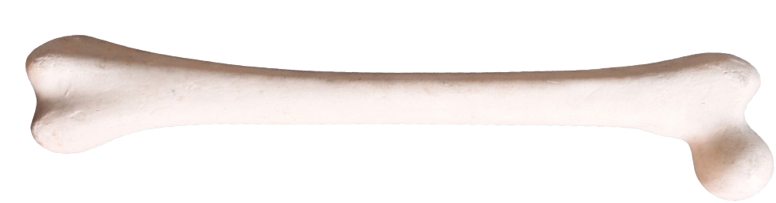

Femur Lab
1. Maximum Length
2. Physiological Length
3. Trochanteric Length
4. Middle Shaft Diameter
5. Head Transverse Diameter
6. Head Vertical Diameter
7. Collodiphysial Angle
8. Femoral Torsion Angle
9. Femur Indices

Drag
Femur Indices Calculator
Shaft Slenderness Index
Formula:
Middle Shaft Diameter × 100 / Maximum Length
× 100
=
Shaft Slenderness Index (Physiological Length)
Formula:
Middle Shaft Diameter × 100 / Physiological Length
× 100
=
Physiological to Maximum Length Index
Formula:
Physiological Length × 100 / Maximum Length
× 100
=
Trochanteric Proportion Index (Max Length)
Formula:
Trochanteric Length × 100 / Maximum Length
× 100
=
Trochanteric Proportion Index (Physiological Length)
Formula:
Trochanteric Length × 100 / Physiological Length
× 100
=
0
cm